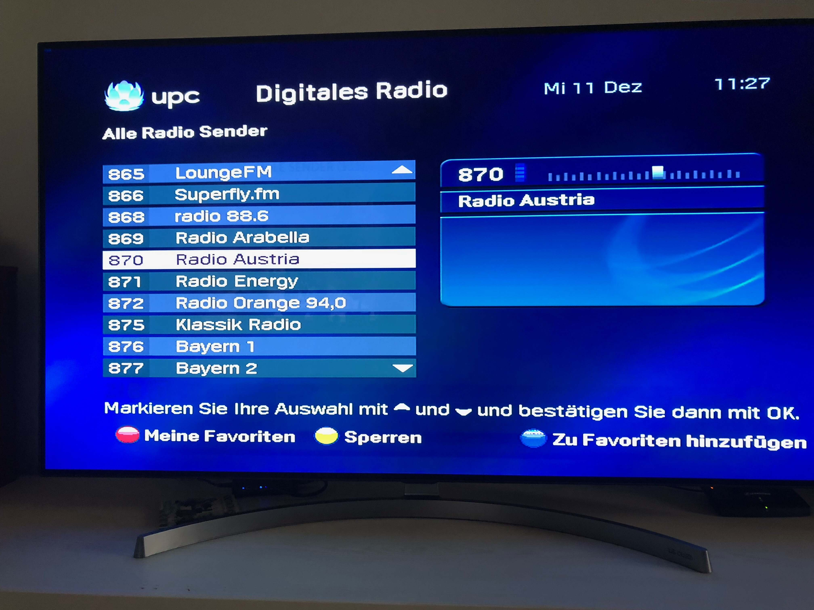

Sendernamen veraltet bzw. inkorrekt beim aufrufen am TV-Gerät (ohne Modul bzw. Kabelreceiver) !
Franz Brazda
An das Magenta TV-Kabel TV und Radio: Namensänderungen im Wr. Raum
Dlf Kultur
nennt sich schon seit langem das ehemalige Deutschland Radio Kultur,
SWR Kultur
nennt sich seit langem das ehemalige SWR 2 und schon lange fällig
OE 24
nennt sich das ehemalige Radio Austria, 2 x Ändern,
ORF 1 HD
nennt sich schon lange das ehemalige ORF eins HD,
ORF 2 EUROPE HD
auf HD aufschalten da SD nur mehr einen lästigen Hinweistext für Satellitenseher sendet !
Bitte ehestens korrigieren
Grüsse euer Magenta TV Kunde
Franz Brazda
Karo
Hallo
@Franz Brazda
, damit es zu keinem Missverständnis kommt, sei bitte so nett und werde etwas konkreter.
Du schaust direkt über DVB-C? Wenn ich dich richtige verstehe, sind die Logos nicht aktuell.
Kannst du uns einen Screenshot/Foto schicken? LG Karo
mir scheint es auch, dass das die Ursache an deinem TV Gerät liegt. Ein Sendersuchlauf könnte helfen. Die Parameter zum Suchen findest du hier:
Parameter
Vielleicht lässt es dein TV Gerät auch zu, dass du die Sendernamen manuell änderst.
Liebe Grüße, JD
üåª
Franz Brazda
Vielen Dank für die Tipps aber ich habe einen Suchlauf auch mit anderen Geräten durchgeführt unter anderen mit der Kabelbox, mit den Erfolg dass die Sendernamen überall falsch waren siehe auch die Grafik. Bitte überprüft eure Netze ob nicht doch die veralteten Sendernamen von euch nicht nachgezogen wurden. Euer Magenta Kunde mit freundlichen Grüssen Franz Brazda

Danke für deine Rückmeldung! Wenn ich das richtig verstehe: Die Sendernamen werden sowohl auf der alten UPC TV Box als auch auf deinem TV-Gerät ohne TV Box falsch angezeigt, selbst nach einem erneuten Sendersuchlauf. Stimmt das so?
Danke für deine Rückmeldung! Wenn ich das richtig verstehe: Die Sendernamen werden sowohl auf der alten UPC TV Box als auch auf deinem TV-Gerät ohne TV Box falsch angezeigt, selbst nach einem erneuten Sendersuchlauf. Stimmt das so?
Liebe Grüße, JD.
üåª
Vielen Dank für die Tipps aber ich habe einen Suchlauf auch mit anderen Geräten durchgeführt unter anderen mit der Kabelbox, mit den Erfolg dass die Sendernamen überall falsch waren siehe auch die Grafik. Bitte überprüft eure Netze ob nicht doch die veralteten Sendernamen von euch nicht nachgezogen wurden. Euer Magenta Kunde mit freundlichen Grüssen Franz Brazda
Franz Brazda
Exakt so ist es, auch andere Magenta TV Seher in Wien (18, 19 und 3) haben das gleiche Problem mit der veralteten Programm-Anzeige !
Mfg Franz Brazda
Bearbeitet
von Franz Brazda
Jonathan Dorian
Am 12.12.2024 um 08:12 schrieb Franz Brazda:
Exakt so ist es, auch andere Magenta TV Seher in Wien (18, 19 und 3) haben das gleiche Problem mit der veralteten Programm-Anzeige !
Alles klar!
Ich habe deine Infos an unsere zuständigen Kolleginnen und Kollegen weitergleitet. Sobald ich News zu Änderungen habe, gebe ich gerne hier Bescheid.
üôÇ
Liebe Grüße, JD.
üåª
Jonathan Dorian
Update:
Die Situation ist bekannt und wird as soon as possible korrigiert. Ich bitte um etwas Geduld.
LG, JD.
üåª
Franz Brazda
Ok, wichtig ist es das Korrekturen immer gewartet werden. Man sollte da immer gleich die Original-Namen von der Source, etwa vom Satelliten (Astra, etc.) bzw. Ö-Radio-RDS übernehmen dann bräuchte man bei möglichen Namensänderungen nichts mehr überprüfen.
ich gebe deine Info gerne weiter. Tolle Infoseite, die du da erstellt hast.
üôÇ
LG, JD.
üåª
Franz Brazda
Schön dass euch die www.adxb.at Homepage gefällt. Ich erstelle diese Seite etwa mit den aktuellen (unverschlüsselten) Wr. Senderlisten Hobbymässig ! Da es sowas in Österreich für den Radio, Kabel bzw.Satkonsumenten meines Wissens nach in dieser Art nicht gibt.
Ein solches Infoservice vermisse ich bei Magenta, Zu den analogen Telekabelzeiten gab es noch einen Infokanal wo man über die Programm-Änderungen bzw. Neuaufschaltungen informiert wurde.
danke für deine Rückmeldung zu den Sendernamen. Ich habe deine Info soeben an unsere zuständigen Kolleg:innen weitergeleitet.
Liebe Grüße, JD.
üåª
Karo
Hallo
@Franz Brazda
, ich habe ein Update für dich. Unsere Kolleg:innen haben uns versichert, dass sie sich das Thema genau ansehen und auch gegebenenfalls die Sendernamen ändern werden. Bitte hab Geduld. LG Karo
Franz Brazda
Hallo Jonathan Dorian bzw. liebes Magenta Team:
Die Sendernamen wurden leider nur teilweise nachgezogen.
Auf Kanal
S 32=394 MHz
gibt es noch immer die Bezeichnung Radio Austria anstatt
Radio OE24
Ausserdem hört man auf
S 31=386 MHz
über den Radiosendern:
Ö2 Niederösterreich,Ö2 Burgenland, Ö2 Steiermark, Ö2 Kärnten und Ö2 Vorarlberg nur eine Hinweisschleife dass man die Satfrequenz neu einstellen soll. Werden die Hausantennen-Kanäle
S 31
bzw.
S 32
nicht mehr von euch gewartet, obwohl sie im Magenta Netz sind ?
{kind=link}
{kind=link}
{kind=link}
{kind=link}
{kind=link}